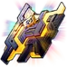

.webp)
| Nome | Gepard Landau |
|---|---|
| Elemento | Gelo | Raridade | ✦ ✦ ✦ ✦ ✦ |
| Caminho | A Preservação |
| Sexo | Homem |
| Especie | Humano |
| Facção | Belobog Guardas Silvermane Família Landau | Mundo | Jarilo-VI | Como obter | Personagem Evento Warp, Partida Warp e Stellar Warpp | Data de Lançamento | 2023-04-26 | Adicionado pela primeira vez | Versão 0.6.0 |
Ascensões e estatísticas
| Fase de Ascensão | Level | Base HP | Base ATK | Base DEF | Base SPD |
|---|---|---|---|---|---|
| 0✦ | 1/20 | 190 | 73 | 89 | 92 |
| 20/20 | 370 | 144 | 173 | 92 | |
| 1✦ | 20/30 | 446 | 173 | 209 | 92 |
| 30/30 | 481 | 285 | 188 | 92 | |
| 2✦ | 30/40 | 617 | 240 | 289 | 92 |
| 40/40 | 712 | 277 | 334 | 92 | |
| 3✦ | 40/50 | 788 | 306 | 369 | 92 |
| 50/50 | 883 | 343 | 414 | 92 | |
| 4✦ | 50/60 | 959 | 373 | 449 | 92 |
| 60/60 | 1.054 | 410 | 494 | 92 | |
| 5✦ | 60/70 | 1.130 | 439 | 530 | 92 |
| 70/70 | 1.226 | 476 | 574 | 92 | |
| 6✦ | 70/80 | 1.302 | 506 | 610 | 92 |
| 80/80 | 1.397 | 543 | 654 | 92 |
| Nível | Custo de Evolução | Materiais de Ascensão do Personagem | Materiais Necessários |
|---|---|---|---|
| 0 → 1 ✦ |  4,000 4,000 |
||
| 1 → 2 ✦ | 8,000 |
||
| 2 → 3 ✦ | 16,000 |
 3 3 |
 6 6 |
| 3 → 4 ✦ | 40,000 |
7 |
9 |
| 4 → 5 ✦ | 80,000 |
20 |
 6 6 |
| 5 → 6 ✦ | 160,000 |
35 |
9 |
Habilidades de combate
| Icone | Tipo | Nome | Descrição | Marcação | Energia | Resistência DMG |
|---|---|---|---|---|---|---|
| ATK básico | Punho de Convicção | Causa Ice DMG igual a 50%–130% do ATK de Gepard para um único inimigo. | Alvo único | Geração: 20 | 30 | |
| Skill | Punição Assustadora | Causa DMG de Gelo igual a 100%–250% do ATK de Gepard a um único inimigo, com 65% de chance base de Congelar o inimigo por 1 turno(s). Enquanto Congelado, o inimigo não pode agir e receberá DMG de Gelo Adicional igual a 30%–75% do ATK de Gepard no início de cada turno. | Prejudicar | Geração: 30 | 60 | |
| Ultimate | Baluarte Duradouro | Aplica um Escudo a todos os aliados, absorvendo DANO igual a 30%–52,5% da DEF de Gepard mais 150–768,75 por 3 turno(s). | Defesa | Custo: 100 Geração: 5 | ||
 |
Talento | Vontade Inflexível | Quando atingido por um golpe mortal, em vez de ser derrubado , o HP de Gepard restaura imediatamente para 25% a 62,5% de seu HP máximo. Este efeito só pode ser ativado uma vez por batalha. | Restaurar | ||
| Técnica | Camaradagem | Após Gepard usar sua Técnica, quando a próxima batalha começar, um Escudo será aplicado a todos os aliados, absorvendo DMG igual a 24% da DEF de Gepard mais 150 por 2 turno(s). | Defesa |
Eidolons
| Icone | Nome da habilidade | Nivel | Descrição |
|---|---|---|---|
| Due diligence | 1 | Ao usar Skill, aumenta a chance base de Congelar inimigos em 35%. | |
| Frio persistente | 2 | Depois que um inimigo Frozen by Skill é descongelado, seu SPD é reduzido em 20% por 1 turno(s). | |
| Nunca se render | 3 | Nível final +2, até um máximo de Lv. 15. Talento Nv. +2, até um máximo de Lv. 15. | |
| A Fé Move Montanhas | 4 | Quando Gepard está em batalha, o Effect RES de todos os aliados aumenta em 20%. | |
| Punho de Ferro Frio | 5 | Habilidade Nv. +2, até um máximo de Lv. 15. ATK Básico Lv. +1, até um máximo de Lv. 10. | |
 |
Determinação Inabalável | 6 | Quando seu Talento é acionado, a ação de Gepard é Avançar em 100% e ele restaura HP extra igual a 50% de seu HP máximo. |
Traços
| Custo Total (1 → 6 para rastreamento de ATK básico) | ||||||
|---|---|---|---|---|---|---|
| 240.000 |
7 |
7 |
3 |  8 8 |
11 |
| Custo total (1 → 10 para um rastreamento) | ||||||||
|---|---|---|---|---|---|---|---|---|
| 652.500 |
13 |
7 |
3 | 15 |
30 | .webp) 3 3 |
 2 2 |